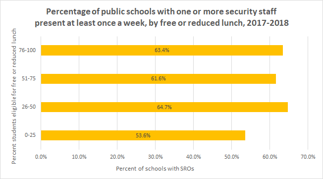

To make sense of issues with school discipline, we will analyze data. We will use the following sources: Civil Rights Data Collection (CRDC) [8.12.141][8.12.142] conducted by the Department of Education annually, data from the National Center of Education Statistics (NCES) [8.12.137][8.12.138], and a report about school support staff from the American Civil Liberties Union (ACLU) [8.12.129]. We will use data collected by official agencies and organizations as it is the most reliable. However there will always be issues of incorrect reporting, and all data should therefore be considered with the understanding that the information it provides is not perfectly accurate.
Subsection8.9.1What is the School-to-Prison Pipeline?
In this introduction to the module, you will begin to think about the school-to-prison pipeline through engaging with a quote and an infographic. Rather than give you data or answers, this section gives you an opportunity to begin asking your own questions.
What, if anything, do you know about the school-to-prison pipeline?
Read the following excerpt from [8.12.135]: “He was always a good boy. Polite,” his grandmother says. “He was raised to be respectful.” So how did he end up in prison? “It’s like they greased the chute. Back when he was in the 9th grade, Kyron got into a fight. Boys fight. Always have. No guns, no knives, just two boys tussling. Next thing I know he is locked up. That’s just crazy! It’s wrong.” What is your reaction to this quote? Write at least three different things.How might the content of this quote be related to mathematics?
Figure8.9.2.School-to-prison pipeline infographic What do you notice about its content? What do you wonder about its content? There is no right or wrong way to notice and wonder, so please list as many observations and questions as you can. Are any of your noticings and wonderings related to math?
This topic may be new to you, and it also may be one that personally affects you. In this module we are primarily focusing on two aspects of the school-to-prison pipeline: school discipline (such as suspensions) and the presence of police in schools. If you have personal experiences with school discipline and police in schools, please engage with this module at your own pace and comfort level. If you know little or nothing about these topics, the following sections will provide you with more information about the problem.
We will investigate the presence of police in schools first, and will then move on to discipline. Whether in contact with teachers, school administrators, or law enforcement, we will see that many students get punished for their actions, and in a variety of ways. We will want to know if these punishments are warranted and who is affected by them the most.
Subsection8.9.2History of police in schools
In this part of the module you will learn about the presence of police in schools. Before you read on, answer these questions:
What do you know about police officers in schools?
Did you go to a school with a school resource officer (SRO)?
Why would schools have SROs?
Subsubsection8.9.2.1
Exploration8.9.1.School resource officers in schools.
Consider the table below, giving the number of school resource officers, number of public schools, and the number of public schools with school resource officers, by full- and part-time school resource officer status, for selected years from 2003–04 to 2015–16 [8.12.137]:
You can also view this table in CODAP 1 , where you can also do calculations for some of the questions. You may want to watch the Simple formulas 2 tutorial to figure out how to do calculations in CODAP.
NOTE: In 2003–04, schools reported on school resource officers present at their school on a regular basis. In 2005–06, 2007–08, 2009–10, and 2015–16, schools reported on school resource officers present at their school at least once a week.
Give at least three observations you can make about the data in the table.
How much did the number of SROs in schools change between 2003-04 and 2015-2016? Give the total and percent change.
What percentage of schools had SROs in 2003-2004? What percentage of schools had SROs in 2015-2016? How did the percentage change?
Why do you think the number of SROs has gone up so much since 2003?
Consider the graph below, based on data from NCES [8.12.137].

Figure8.9.4.Securty staff by free and reduced lunch What does the graph tell you about which schools are more and less likely to have school resource officers?
You probably notice from doing this exploration that the number of SROs and the number of schools with SROs has gone up. According to [8.12.129], “Following the 1999 Columbine High School shooting, President Clinton called for the first round of Community Oriented Policing Services (COPS) grants as a response that would allow for school/police partnerships focused on 'school crime, drug use, and discipline problems.'' COPS is a unit of the U.S. Department of Justice. After the Sandy Hook tragedy in 2012, President Obama allocated another $45 million into COPS to fund additional school police. Federal grants were supplemented by state grants and local monies to sustain SRO programs.”
In other words, highly publicized school shootings were part of the impetus for increased presence of police in schools, even though school shootings are statistically very rare [8.12.143].
Subsubsection8.9.2.2Summary
The presence of police officers in schools has significantly increased since 1999 in response to the Columbine High School and other shootings. The majority of public schools have a part-time or full-time SRO on campus, though schools with a higher percentage of free and reduced lunch eligibility are more likely to have an SRO. In the next section we will look at other supports that have been considered important for preventing school shootings and for improving well-being of students.
Subsection8.9.3Presence of other student supports in schools
It has been argued that to prevent shootings (and for many other reasons), schools should invest in supporting students’ mental and physical well-being. However, in most states, there is a shortage of nurses, social workers, psychologists, and counselors in schools. In this section, you will compare numbers of school support staff (including SROs) in different states.
Before you continue, answer the following questions:
Was there a nurse, social worker, psychologist, and/or counselor in schools you went to?
How common do you think these support staff are in schools?
Subsubsection8.9.3.1
We will first look at Delaware and Washington, DC as examples, and then you will have a chance to look at your own location if it is different from these two.
Exploration8.9.2.School support staff in Delaware.
Use the following Geogebra 3 applet to help you explore the following guiding questions about school support staff in the state of Delaware [8.12.129]
.
Which pieces look to be similar in size? Are there relationships between the piece sizes?
Show the names of the sections. Use this to help you refine your discussion above.
Now select the option that allows you to see the number that corresponds with each section. Do the numeric values change any of the relationships that you developed?
Do you think you would have made the same comparisons if you had known the numbers first instead of focusing on the visual representation?
In this exploration, certain pieces were generally the same size even though they did not hold the same numeric value. Let’s take a minute to explore that difference between the visual representation and the numerical data.
Exploration8.9.3.Exploration: School support staff in Washington DC.
Examine the following table with data for the school support staff in the Washington DC school district [8.12.129].
Look at the numbers for the groups and make comparisons between them. Are there any exact ratios, meaning any comparisons between groups that are identical or can be combined to be identical?
Thinking about probability, which type of support staff has the highest probability? Which type of support staff has the lowest probability?
Critical thinking: How does the ratio of (Law Enforcement + Security Guards):(Counselors + Social Workers + Psychologists + Nurses) look? Why would we be interested in this ratio? Were you expecting it to be closer together or further apart? How does this help you think about the school-to-prison pipeline?
Critical Thinking: Building on the idea from the previous question, what groups of support staff do students have the highest probability of encountering? How does this help you think about the school-to-prison pipeline?
In the next exploration you will have a chance to look at your state or a state that you are interested in.
"Given the importance of these providers, experts and professional organizations provide recommended student-to-SBHM provider ratios. The American School Counselor Association recommends a ratio of 250 students per counselor. The National Association of School Psychologists (NASP) recommends a ratio of 500-700 students per school psychologist, depending on the comprehensiveness of services being provided. School Social Work Association of America (SSWAA) recommends that social work services should also be provided at a ratio of 250 students to one social worker. Several states, along with the American Nurses Association, recommend a ratio of one school nurse to 750 students in healthy student populations."
Consider the table adapted from [8.12.129] that gives the numbers of counselors, social workers, psychologists, nurses, teachers, law enforcement, and security guards in U.S. public schools by state in 2015-2016. You can find the table in CODAP 4 or in Google Sheets 5 (this sheet is view only). Note that the numbers of teachers, law enforcement, and security guides are provided for your information only. You will not need this information.
Select a state. You can choose the state where you currently live, the state in which you were born, the state where you went to school, or even just a state that interests you. How many students went to school in that state in 2015-2016? (Note: Hawaii and Florida have data that may have been underreported. If you choose one of these two states, you will have to decide how to deal with the missing or incomplete information.)
Calculate the number of counselors, school psychologists, social workers, and nurses that should have been employed in that state’s public schools in 2015-2016 according to the recommended ratios from the paragraph. If you wish, you can use CODAP to calculate the answers.
Compare your calculated answers with actual numbers of counselors, social workers, psychologists, and nurses in the table for your chosen state. How do the numbers compare?
What did you learn from this investigation and what do you still wish to know?
Subsubsection8.9.3.2Summary
The majority of public schools have a part-time or full-time SRO on campus, but not counselors, social workers, psychologists, and nurses. This is true nationwide, with some exceptions.
In the next section, we will get to the central problem with school discipline: that it affects different populations very differently. We will first look at arrests and then at suspensions.
Subsection8.9.4Who gets arrested in schools
In this part of the module, you will learn about school arrests. You will look at some national statistics to draw conclusions about disparities that exist in school arrests with respect to race and ability.
Before you continue, answer the following questions:
How often do you think students are arrested at school?
Why do you think students are arrested at school?
Subsubsection8.9.4.1
Exploration8.9.5.School arrests.
There were over 204,000 referrals to law enforcement in 2015-2016 in U.S. public schools, almost 52,000 of which were school arrests. The actual number is likely higher due to underreporting.
Consider the table, created using data from CRDC [8.12.142], that gives rates of school arrests by race and disability status by state per 10,000 in 2015-2016. Because the table is large, it is linked: School arrest rates per 10,000 by state, 2015-2016 6 . This table is a view only Google Sheet. You can create your own copy if you want to edit it.
You can find the table in the CODAP file School arrests: rates only 7 , where you can manipulate the data and do calculations with it. If you are interested in total numbers of arrests and not just the rates, you can find them in the CODAP file School arrests: all 8 . Review the Simple formulas 9 tutorial if you need help doing calculations in CODAP.
What do you notice about this table? What do you wonder? Remember that there is no right or wrong way to notice and wonder, but try to include mathematical observations.
Consider the data: How do you think the data in this table were collected? What do the data tell us and what are they unable to tell us? What biases may be present in how the data were collected and summarized?
Are there groups in the table that are mutually exclusive? Explain your reasoning.
Are there groups that are not mutually exclusive based on the information provided? Explain your reasoning.
The table gives rates per 10,000. For example, the 10.26 in Arrests per 10000 column for all of United States means that for every 10,000 students in the United States, around 10 were arrested. The arrest rate for students with disabilities in 2015-2016 was 20.69 per 10,000. Who do you think was more likely to be arrested in 2015-2016: students with disabilities or students without disabilities? How do you know?
Are there any particular groups of students who seem to be arrested more than others? What is your evidence for your conclusion?
Are there any particular states or regions that seem to arrest students more than others? What is your evidence for this conclusion? To answer this question you can make a graph in CODAP. For example, you can drag the state attribute to the x-axis and one of the arrest rates to the y-axis.
If students from one group are arrested more than is their share of the population, we say that they are disproportionately arrested. Consider the stacked bar graph created from CRDC [8.12.142] data:
Figure8.9.7.School enrollment and arrests by race Note that the graph combines Asian, American Indian or Alaska Native, and Native Hawaiian or other Pacific Islander students because the percentages of their arrests are all very low and would be hard if not impossible to see on the graph. Of the five groups in the graph, which are disproportionately arrested in schools?
Would you say that students with disabilities are also disproportionately arrested in schools? How do you know?
(Optional) There is no information about the breakdown of students arrests by offense. However, media have reported numerous stories of students being arrested for minor infractions. If you are interested, you can find some examples in the document Articles about individual instances of discipline. 10
Subsubsection8.9.4.2Summary
Large numbers of arrests are made in schools every year. The arrests are disproportionately among Black students and students with disabilities.
Subsection8.9.5Who gets suspended from school
In this part of the module, you will learn about school suspensions and begin to make connections between school discipline and incarceration.
Before you continue, answer the following questions:
Why do you think students get suspended from school?
Are all groups of students equally likely to get suspended or are some groups suspended more than others?
Subsubsection8.9.5.1
Exploration8.9.6.Prison population simulation.
One tool that is used to model and understand probability is simulation. In this part of the module, we will be using a simulation to help us explore different probability scenarios to see which behaves most like our target. We can determine if information from an empirical model provides a stable foundation for a theoretical model, meaning it can be replicated or nearly replicated over a number of trials. We can also use a theoretical model to produce simulated samples which can let us know if different empirical models are valid. In this exploration, you will examine a data table that shows the overall population for men's prisons by race [8.12.132]. Then you will examine three different simulations to see which one you think would be most likely to produce the prison population given. In reading the output from the simulations, there is an overall summary column presented at the left, which shows the mean proportion for each race for all of the trials. In the center, there are the summaries from each trial, meaning it shows the proportion for each race in each trial. Then in the far right hand column, the raw data is shown. The simulations model the selection of 50 individual prisoners in 25 repeated samples. The variable being simulated is prisoner race because that is what we are interested in modeling. Before you start working with the simulations (where you only need to select “start” to collect data), think about strategies that you can use to see if you think a model will match.
Simulation A 11 represents the general population according to the US Census.
Simulation B 12 represents the percentages of students suspended in schools.
Simulation C 13 represents the percentages with all groups being evenly distributed.
The three simulations did not present an exact match to the prison population, but which model do you think was the closest to the prison population model?
What factors helped you make your decision about fitting the model?
Do you think that this single variable (prisoner race) was enough to help you make a decision about the model? What additional information would you think would be useful, if any?
The simulations automatically calculated the proportions of each population group. Explore the data that was produced in the simulations. How does the selection of an individual in the simulation influence the calculated proportion?
Notes about probability: For the exploration you just completed, the outcomes of the probability experiment you conducted were the prisoners that were being simulated. There was also a specific group that was counted to create each proportion. These specific groups were the races of interest being counted. The probability is a ratio of the specific outcome of interest over the total number of outcomes. In the simulations, we looked at different races as the specific outcomes. It may be helpful to revisit the exploration with this definition and see if any of your ideas change.
Subsubsection8.9.5.2Analyzing school suspension data
Students can receive in-school or out-of-school suspensions. In this investigation, we focus on out-of-school suspensions only.
Consider the table, created using data from CRDC [8.12.142], that gives numbers of students with one or more out-of school suspension by race and disability status and by state in 2015-2016. Because the table is large, it is linked: Out-of-school suspensions by state, 2015-2016 14 . It is a view only Google Sheet, so you need to create your own copy if you want to edit it.
The CODAP file Out of school suspensions 15 contains this same information. In this investigation, you will analyze the data in the table.
Can you make some observations about the table just from looking at it? If so, what observations can you make?
Make one or more graphs in CODAP to help you make sense of the table. Remember that you have to drag an attribute to the x-axis and that you may also drag an attribute to the y-axis to make a meaningful graph.
What are the advantages of giving only total numbers of suspensions and not rates?
What are disadvantages of giving only total numbers of suspensions and not rates?
Create a formula in CODAP or use a calculator to calculate some suspension rates from the table (e.g., rates for your state by race or for a particular race by state). What do these rates tell you about how suspensions vary by state and/or race?
Subsubsection8.9.5.3Summary
As is the case with arrests, Black students and students with disabilities are disproportionately disciplined at school. While we did not look at gender in this module, it is worth noting that boys get suspended much more than girls, though racial disparities for girls’ suspensions are more pronounced.
In the last part of the module, it may become more clear where the term school-to-prison pipeline comes from. As it turns out, students who are disciplined at school are more likely to leave school and have increased interactions with law enforcement.
Subsection8.9.6Where is the pipeline?
In this part of the module, we return to the concept of the school-to-prison pipeline and look at some connections between suspensions, school pushout, and incarceration.
Before you continue, answer the following question:
What long-term consequences may there be for students who are suspended from school or arrested at school?
Exploration8.9.7.Data from Texas.
In 2011, researchers from the Council of State Governments Justice Center in partnership with the Public Policy Research Institute at Texas A & M University published a report [8.12.133] based on data from all public school students in Texas who were in seventh grade in 2000, 2001, and 2002. The researchers followed these students for at least six years, with access to academic and juvenile records. Among the researchers’ findings was that only 3% of the offenses for which students are disciplined are ones where by law schools are required to suspend or expel. The other 97% are at administrators’ discretion.
The study also found that 59.6% of all the students were disciplined one or more times and 40.4% were not. The table below summarizes some of the outcomes for the different groups of students.
\begin{equation*}
\begin{array}{|c|c|c|}\hline \text{}\amp \text{Total students in the study (928,940)}\amp \text{} \\ \hline \text{} \amp \text{Students with disciplinary actions (553,413)} \amp \text{Students without disciplinary actions (375,527)} \\ \hline \text{Held back a at least once} \amp 31\% \amp 5\% \\ \hline \text{Dropped out} \amp 10\% \amp 2\% \\ \hline \text{Juvenile justice contact} \amp 23\% \amp 2\% \\ \hline \end{array}
\end{equation*}
Using what you now know about ratios, percents, and probability, explain whether the term “school-to-prison pipeline” is justified for the students from this study.
What else would you like to know to better answer this question?
Subsection8.9.7Summary
Students who were disciplined at school in Texas between 2000 and 2002 were much more likely to be held back a grade, drop out, or have contact with juvenile justice. These school discipline actions were 97% of the time at the administrators’ discretion and not mandated by school policies; and they had a lasting impact on a large number of students [8.12.133].
Numerous studies have found that students who are arrested at school or who have been suspended are more likely to drop out of school and have continued contact with law enforcement. A recent study [8.12.131] found that in Charlotte-Mecklenberg school district in North Carolina, students who were assigned to schools with higher suspension rates were significantly more likely to be arrested and incarcerated as adults, and less likely to attend a four-year college. Furthermore, the results were independent of which students were assigned to the schools (the study took place during a redrawing of school boundaries when over 50% of the students in the district were assigned to different schools), or of factors like teacher turnover. Instead, the suspension rates were most influenced by school policies and leadership.
Since Black students and students with disabilities are disproportionately disciplined and arrested and schools, it follows that they are also disproportionately likely to drop out of school and have continued troubles with the law. This is why the school-to-prison pipeline disproportionately affects these students.